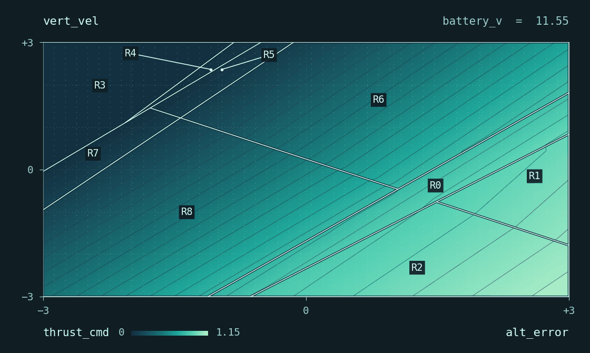

ONNX decompiler
Read the code
inside an
ONNX model.
GlassBox turns small neural networks into C99, Rust and Python. Inspect each branch and see where the program agrees with the network.
drone_altitude_pid.onnxRecorded run
Output slice
Altitude controller

Z3 · UNSAT9 of 9 leaves proven
Verification results
Inside the model zoo
Open a saved run to inspect its source, certificate and counterexamples. Agreement is measured on sampled inputs.
Drone altitudeRegression100.00%Global proof
CartPole policyClassification99.98%Counterexample
Reactor safety guardClassification92.86%Counterexample
Nonlinear actuatorRegression99.67%Counterexample
Read the benchmark ledger
Local quickstart
Replay the drone proof
Use Python 3.11 or later in a virtual environment. The example bundle includes the ONNX model, program and certificate.
For this regression run, Z3 checks that the absolute output error stays within 0.05 throughout the declared domain. Studio reports floating-point measurements separately.
Terminal
git clone https://github.com/Dafenxz0/glassbox.git
cd glassbox
python -m pip install -e .
glassbox verify bundles/drone_altitude_pid.gbundle --timeout 30
glassbox studioLocal Studio
127.0.0.1:8765/studio/